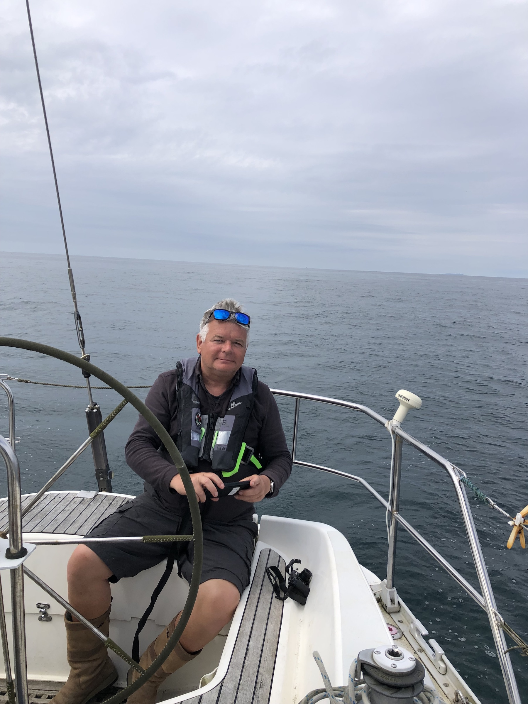

Sailing the Scottish Isles July 2024

From Canna to Croabh Haven aboard Highland Spirit over three great days
A memorable trip with Tim Jeffery and Gareth Cole’s Sigma 38 Highland Spirit. As always sailing other people’s boats helps one understand ones own and I thoroughly enjoyed a few days aboard such a fine boat in what must be one of the finest cruising areas in Europe. Starting from Glasgow and a trip to Hellensbrurgh to see Charles Rennie Mackintosh's remarkable Hill House 'drying out' under its temporary roof as part of a lengthy resoration
First dolphins of the trip were seen from the ferry to Canna on the bow. Why do they take pleasure in doing this, even with a ship? A fine arrival at Canna, settling into a slightly chaotic boat, but soon had it shipshape, with heavy batteries to install in the morning. We set off south at 1200. Past the solemn Rum and the more jaunty Eigg and haeding out into the sea south to Coll. Amazingly we saw a whale about 50 metres off our stern, a single fin and big back - a Minke, making its way west ignoring us as did the porpoises which pass occasionally. Not so the dolphins which deliberately came to play on our bow, keeping very close and shooting from side to side. Playing? Unlikely, perhaps there are fish under the boat or nearby. We arrived at Arinagour on the low and atmospheric island of Coll. Surprisingly all the visitor mooring buoys were taken so we anchored well up the bay and watched the boats and wildlife. The astonishing pinks and violets as the sun set over anchorage on this low rocky island, somehow primitive and wild.
The next morning raising the big anchor made for hearty exercise in the morning. We sailed when we could, and otherwise motored quietly in the sunshine and calm water passing a series of sculptural islands down to Staffa. Fingles Cave is dramatic seen from the water. The wonderful hexagonal organ pipes of ancient volcanic rock. And the huge cave which looked somewhat diminished seen from the boat at 100 or so meters away in the swell - was still a powerful experience. The swell had proved a little too much to comfortably anchor and go ashore in the dinghy so we admired the cave and the geology from the water.
Then a change of plan had us setting off north again, destination Tobermory and a fine afternoon was spent passing the many bays and valleys of Mull. We were sailing at last for a short while before reaching the picture post card (and expensive) town of Tobermory. Good food though! A little difficulty getting off the pontoon in the morning reminded me of the challenges of manoeuvring such a large and light cruiser racer when there is any wind about. From Tobermory we headed a small way up the seemingly endless loch Sunart. Such fine glacier smoothed volcanic rocks rising out of the sea to green hills. What look like enormous man made terraces are actually layers of volcaninc rock from a time when this was quite a different place. We had a good sail to the hugely contrasting wooded and sheltered calm of Lochaline for the night. Here they mine for white silica sand. It was astonishingly white and apparently valuable, used for high quality optic glass. The mine ground and rolled on for much of the night. The next day was our the last leg sailing most of the way in light airs and motoring through the tricky sound of Cuan at Luing. A day which felt more like sailing Snow Goose only of course Highland Spirit will sail closer to the wind and will keep going in much lighter winds. Finally arrived at Croabh Haven in the late afternoon. A satisfying journey only slightly marred at the end by my dropping a fender in the water, later recovered expertly by Tim gently reversing up to it. Looking out from this eery early morning and late evening at the harbour the islands beyond and the sky from my bed is special, one is thoroughly in the view – and the weather as it rolls in from the west. On this calm morning a seal swims lazily by and the huge sky is reflected in the water.
